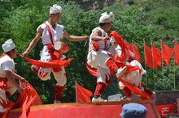
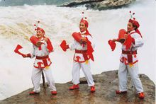
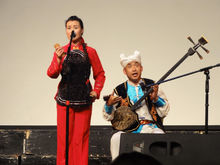
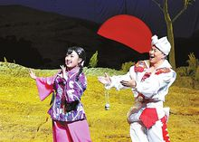
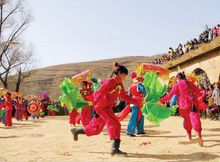
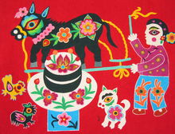

-
安塞腰鼓安塞腰鼓具有2000多年的历史，被称为“天下第一鼓”。1996年，安塞县被国家文化部命名为“中国腰鼓之乡”。早在1986年，安塞腰鼓就荣膺首届中国民间舞蹈大赛最高荣誉大奖，先后在第11届亚运会开幕式、香港回归庆典、2009年国庆典礼等大型活动中表演。
-
洛川蹩鼓洛川蹩鼓主要流传于陕西省洛川县黄章、永乡、旧县等乡村，为延安著名的“三鼓”（胸鼓、腰鼓、蹩鼓）之一，2006年申报陕西省非物质文化遗产。
-
宜川胸鼓宜川胸鼓以鼓舞为基础的一种民间舞蹈形式，历史悠久，经由古代战争中人们擂鼓助战，传递信号，击鼓庆捷的形式演变而来，原名花鼓。1994年参加国庆45周年献礼演出，宜川1996年被文化部命名为“胸鼓之乡”。2007年申报陕西省非物质文化遗产。
-
陕北说书陕北说书西北地区十分重要的曲艺说书形式，主要流行于陕西省北部的延安和榆林等地。陕北说书的唱词通俗流畅，有浓郁的地方特色；曲调比较丰富，风格激扬粗犷，素有“九腔十八调”之称。
-
陕北民歌陕北是民歌荟萃之地，民歌种类很多，当地俗称“山曲”或“酸曲”。陕北民歌分为劳动号子、信天游、小调三类。信天游分为高腔和平腔，其中以信天游最富有特色、最具代表性。
-
陕北秧歌陕北秧歌是流传于陕北高原的一种具有广泛群众性和代表性的传统舞蹈，又称"闹红火"、"闹秧歌"、"闹社火"、"闹阳歌"等。2006年5月20日，陕北秧歌经国务院批准列入第一批国家级非物质文化遗产名录。
-
延川布堆画来源于广泛流行于民间的拨花，原为枕头顶、裹肚、鞋面、垫肩、钱包、烟袋包上的装饰物。其创作材料为棉纺织土布，染以青、赤、黄、白、黑诸色，运用纯民间的复合造型法，进行贴块、拼接、镶花、堆叠、缝合，制作出极具民族特色的图案。
-
延安剪纸延安剪纸历史悠久、品种繁多、做工精美、特色突出，最具代表性的有安塞、子长、延川、富县、延长、洛川和甘泉等县的剪纸艺术。诸如花虫鸟鱼，飞禽走兽以及戏剧人物、民间故事、吉祥物、民俗事象、佳节喜庆等，造型古拙，风格粗犷，寓意风趣，形式多样。